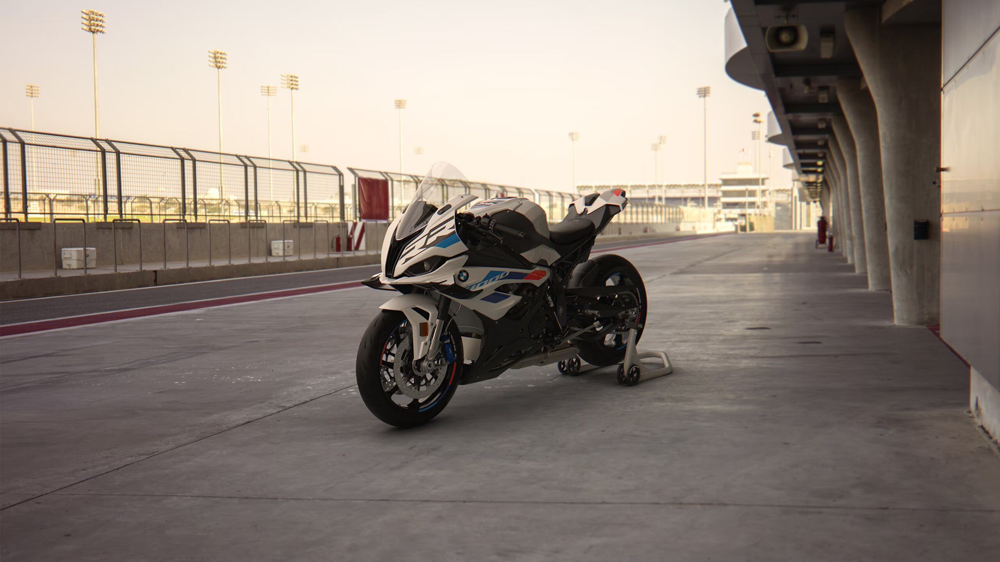
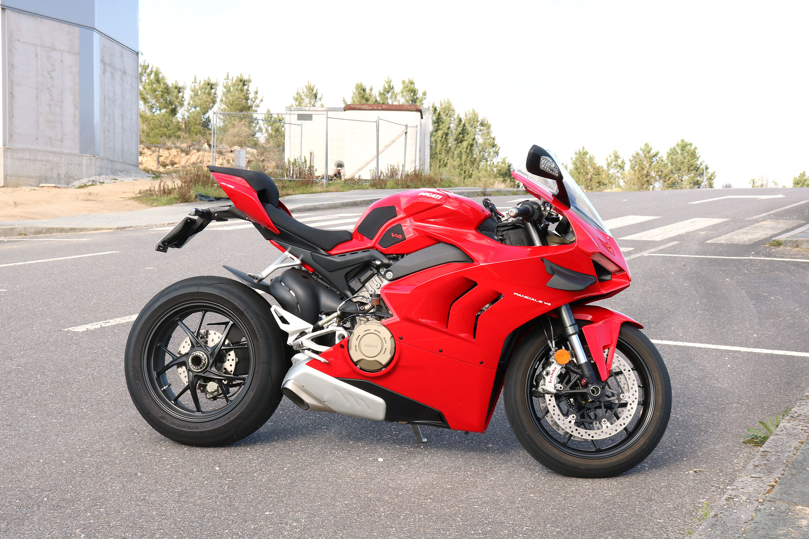

Una motocicleta, es un vehículo de dos ruedas, impulsado por un motor de combustión interna a gasolina. Las motocicletas se caracterizan por su diseño compacto y su capacidad para desplazarse ágilmente en comparación con los automóviles. Están equipadas con manillar para el control de la dirección y acelerador en el puño para regular la velocidad.
Además, su funcionamiento incluye cambios de marcha y frenos, al igual que los automóviles, pero en una escala más reducida. Las motocicletas se utilizan tanto para el transporte diario como para fines recreativos y deportivos, como el motocross o el motociclismo de carretera. Su popularidad se debe a su eficiencia en el consumo de combustible y a la facilidad para moverse en el tráfico, especialmente en áreas urbanas.
